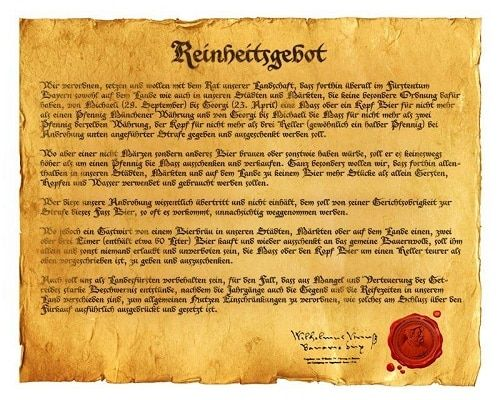
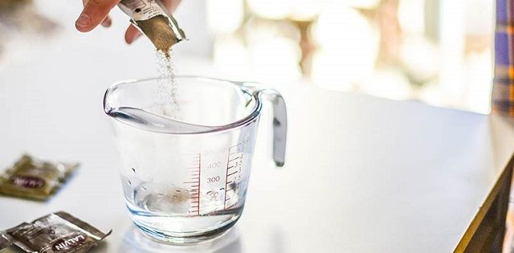

Ingredientes Principales
Las cervezas artesanales se basan en la Ley de Pureza Alemana del año 1516 que indica que sólo se puede elaborar cerveza con agua, cebada malteada y lúpulo. Posteriormente, se han incluido las levaduras en el proceso de elaboración.
- Lúpulos
- Planta que crece en las alturas de la familia del Cannabinanceae. Para la elaboración de cerveza se utilizan sólo las flores de plantas femeninas.
- Maltas
- Cuando hablamos de maltas podemos hacer la siguiente clasificación:
- Agua
- Una gran parte de la cerveza es agua, alrededor del 90-95%, lo que la convierte en el principal ingrediente en su elaboración y consumo. El agua, según su composición, contiene iones que afectan directamente las características finales de una cerveza, para bien o para mal.
- Levadura de Cerveza /
| MALTAS | TIPO DE MALTAS | |
|---|---|---|
| Color | Descripcion | |
| 1. | Ámbar o amber | Se utiliza en cervezas Mild, Bitter, IPAs y Ales. |
| 2. | Black Malt | Permite hacer cervezas muy negras y con mucho carácter, como las stouts, o dar color a Porters o Mild. |
| 3. | Cebada Tostada | Se utiliza para dar color y, sobre todo, aroma y dulzor, en Stouts y Porters Milds. |
| 4. | Chocolate | Se usa para dar color y sabor tostado a Stouts, Porters, Milds, Bitters y Ales. |
| 5. | Crystal 150 | Se utiliza en Mild, Bitter, IPA y Ale. |
| 6. | Crystal oscura | Para cervezas tipo Stout, Porters y Milds. |
| 7. | M Otter Extra Pale | Usada para hacer cervezas tipo IPA, Ale, Bitter, Mild, Porte y Stout. |
| 8. | Lager | Utilizada en Lagers, Golden Ales, y cervezas ligeras (light beers). |
| 9. | Maris Otter | Usada para hacer cervezas tipo IPA, Ale, Bitter, Mild, Porter y Stout. |
| 10. | Mild | Se utiliza para cervezas Bitter, Mild, Porter y Stouts. |
| 11. | Munich | Se utiliza para hacer IPAs, Ales, Bitters y Milds. |
La levadura es un hongo unicelular que se reproduce asexuadamente por gemación, un proceso en donde su estructura desarrolla una yema o protuberancia que luego se convierte en un nuevo individuo.
La mayoría de los estilos de cerveza se elaboran utilizando levaduras de dos especies del tipo Saccharomyces, que consumen azúcar y la transforman produciendo alcohol (etanol) y CO2 (dióxido de carbono).